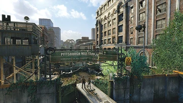

THE JOURNEY ACROSS AMERICA
The journey in The Last of Us is not only about moving through dangerous places. It is also about feelings like fear, sadness, and hope. Joel and Ellie change as they travel, from the quarantine zone in Boston to the Firefly hospital in Salt Lake City. I remember the scary hotel basement, the sad story of Henry and Sam, and the beautiful giraffes in a ruined city. What makes the story unforgettable is that the world shows what happened. There are abandoned cars, notes from people who were trying to survive, and buildings that nature has taken back. The game also uses seasons—Summer, Fall, Winter, and Spring—to show different moods. Winter, when Ellie takes more control, feels tense. This journey taught me that surviving is not just staying alive. It is staying human too.
The Four Seasons of The Last of Us
Summer: Hope and discovery — Joel and Ellie leave Boston, meet Bill, and drive across the country. Fall: Bonding and loss — the dam, the university, and Henry & Sam's tragedy. Winter: Survival and fury — Ellie hunts for food and faces David. Spring: Resolution and heartbreak — Salt Lake City and the hospital choice.


"Endure and survive. That's the only promise that matters." — Ellie
KEY MOMENTS
Sarah's Death
The ending sets the tone: Joel loses his daughter, and his emotional shell is built.
Giraffe Scene
A moment of pure wonder in Salt Lake City. Nature thrives while humanity crumbles. Pure hope.
Winter Cabin
Ellie's brutal fight against David shows her transformation from child to survivor.
Citations & Sources: Story analysis includes personal gameplay experience (original content). Game facts referenced from The Last of Us Wiki.